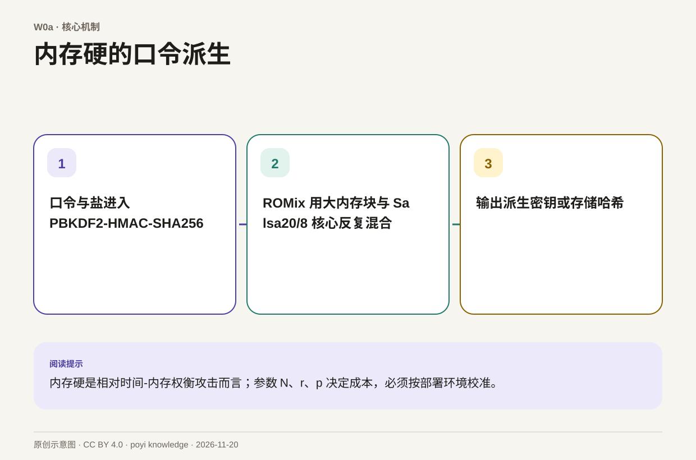
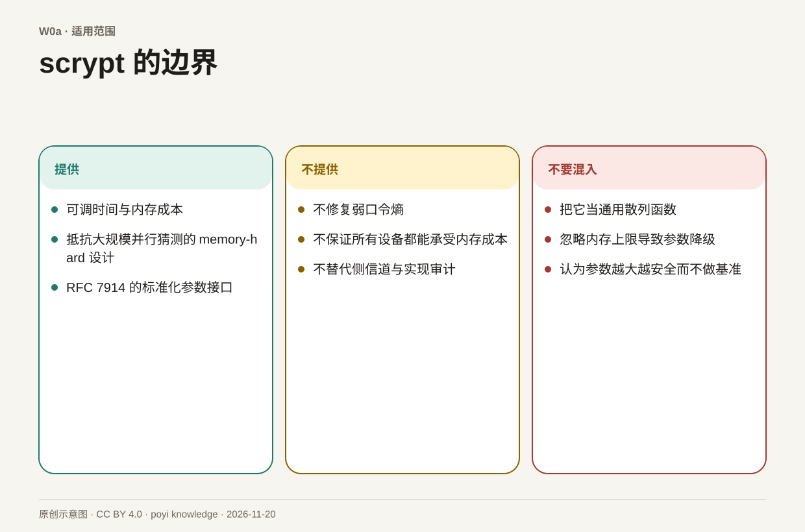

原理与机制
算法：scrypt 内存硬口令派生（scrypt）。scrypt 干的事和 PBKDF2 一样：把口令变成密钥。区别在于它逼你先占一大块内存。三步（RFC 7914 第 6 节）：
1.B[0..p-1] = PBKDF2-HMAC-SHA256(P, S, 1, p * 128 * r)
2.for i = 0..p-1: B[i] = scryptROMix(r, B[i], N)
3.DK = PBKDF2-HMAC-SHA256(P, B[0] || ...|| B[p-1], 1, dkLen)
scryptROMix 是核心，两轮循环：
- 填表：X = B；重复 N 次，每次把 X 存进
V[i]，再令 X = scryptBlockMix(X)。于是内存里躺着 N 份状态。- 乱跳：重复 N 次，j = Integerify(X) mod N，然后X = scryptBlockMix(X xor V[j])。j 是由数据决定的——攻击者必须真的把那块内存读出来才能继续。scryptBlockMix 是 Salsa20/8 核（64 字节输入输出，8 轮 Salsa20）加上一次「偶数位在前、奇数位在后」的交错重排，把 2r 个 64 字节块重组成 r 个 128 字节块。- N（必须是大于 1 的 2 的幂）：同时决定时间和内存。内存占用恰好是128 × N × r字节。- r（块大小）：主要影响内存布局。- p（并行度）：把工作分成 p 份独立进行，不增加内存占用，只增加 CPU 时间。拿 OWASP 推荐的N = 2^17, r = 8, p = 1算：内存 = 128 × 131072 × 8 = 134 217 728 字节，正好 128 MiB。核心性质是「顺序内存硬」（sequential memory-hard）：一个内存比攻击者每核可用内存更少的对手，跑一个实例就得付出巨大的时间代价；而跑 b 个实例就需要 b 倍的内存。换句话说，并行度被内存成本按比例拖住了。RFC 7914 第 14 节说得克制：ROMix 在把 H 理想化为随机预言机的前提下被证明是顺序内存硬的，而 scrypt 的安全性另外依赖于「Salsa20/8 核不提供捷径」这个假设。

为什么重要
scrypt 存在的理由只有一句话：GPU 和 ASIC 变便宜的速度，远远快过内存变便宜的速度。
RFC 7914 第 1 节把这件事讲得非常直白。传统的口令派生（DES crypt、MD5 crypt、SHA-crypt、PBKDF2、bcrypt）都是「迭代 + 加盐」。这类方案的迭代次数可以跟着硬件一起涨：只要把 c 调大，用户每次登录的计算时间就保持恒定，看起来没吃亏。但这只是账面上的平局。真正的问题是：暴力搜索口令这件事天生是完美并行的。你的服务器一次算一个口令，攻击者的 GPU 同时算几万个。迭代次数涨 10 倍，攻击者的时钟也慢 10 倍——可他手里的芯片数量没变。于是「按美元算的算力」这个真正的度量单位，一直在往攻击者那边倾斜。半导体技术的进步让电路不只更快，还更小，于是同样的钱能买到更多并行度。每年都在恶化。
scrypt 的对策不是「再迭代多几次」，而是把战场从算力挪到内存带宽。这招很聪明，因为：
- 显卡的核心之间不共享高速缓存。每增加一个并行实例，就得独立拥有一大块内存。GPU 的成本结构（海量大算力、小缓存）被彻底打乱。- 专用 ASIC 造出来之后，从「算力瓶颈」变成「内存带宽瓶颈」。而内存带宽是比算力更贵、更难堆的东西。RFC 7914 还给了一个很实际的观察：SMix 的各个实例互相独立，所以可以靠加大 p 来提高计算成本而不增加内存占用——将来 CPU 算力和内存容量增长速率不一致时，scrypt 依然能调得动。它的诚实之处：scrypt 不是「最强的」，是「性价比最高的防守方」。2015 年之后的 Argon2 在内存硬性和抗侧信道上更进一步，今天 OWASP 把 Argon2id 排第一、scrypt 排第二。但 Argon2 更复杂、参数更多、实现更容易出错，scrypt 依然在绝大多数场景里够用。
应用与实例
- Tarsnap：Colin Percival 自己的备份服务用它保护主密钥，这是 scrypt 的第一个大规模真实部署。- Debian / Ubuntu 的系统口令：
libxcrypt的默认口令哈希是 yescrypt——一套基于 scrypt 的变体，2018 年起取代了传统的 SHA-512crypt。全球发行版 Linux 的大部分机器上都在跑 scrypt 的近亲。- OpenSSL：1.1.1 起提供EVP_KDF的 SCRYPT 实现，可用于 TLS 的PSK身份密钥派生和 PKCS #8 私钥加密。- Python：hashlib.scrypt()（底层是 OpenSSL）。Go：golang.org/x/crypto/scrypt。Rust：RustCrypto 的scryptcrate。Java：Bouncy Castle。几乎所有语言都有现成实现。- RFC 7914 的 ASN.1 定义：id-scrypt的 OID 是1.3.6.1.4.1.11591.4.11，可以直接用在 PKCS #8 的加密私钥里；RFC 原文给了一个N = 2^20, r = 8, p = 1的完整 PKCS #8 测试样例。- 嵌入式与合规场景：内存受限设备用它做密钥派生，FIPS 140-3 验证库里也有它的位置（不像 Argon2 那样需要额外的验证覆盖）。- OWASP 推荐参数（2023 年版）：N = 2^17, r = 8, p = 1（128 MiB）为首选，同时给出N = 2^16, p = 2、N = 2^15, p = 3、N = 2^14, p = 5、N = 2^13, p = 10这组「防御力大致相当」的替代配置，代价在内存和并行度之间做取舍。
边界与攻击面
scrypt 没有被「攻破」，但它有几个必须知道的失效模式。
- 内存是它的攻击面，也是它的 DoS 面。RFC 7914 第 14 节专门警告：参数不该由不可信方决定，否则攻击者可以给出荒谬大的 N，让服务器分配几 GB 内存。凡是把口令哈希参数放进客户端可控数据里的系统（token、配置、粘贴的哈希串），就是一个内存耗尽漏洞。
- 它有已发表的侧信道攻击。Forler、Lucks 与 Wenzel 在 ASIACRYPT 2014 的《Memory-Demanding Password Scrambling》里指出：scrypt 的内存访问模式依赖口令（因为 j 由状态决定），因此可以用缓存计时攻击在受害者机器上恢复口令；他们还演示了垃圾回收攻击，并为此提出了替代方案 Catena。这是 scrypt 相对 PBKDF2 的真实退步：你换来的是内存成本，付出的是访问模式泄露。
- 内存硬性依赖于「DRAM 慢」这个物理假设。Choe 等人在 MEMSYS 2019 指出：随着近存计算、计算型内存这类把算力搬进内存的技术出现，内存访问的延迟和能耗大幅下降，依赖内存访问成本来买时间的整套安全论证都会被削弱。- 参数调错，内存硬性就没了。RFC 7914 明确警告：如果为了省内存把参数调得太小，算法性质就变了。想省内存又不想丢内存硬性，唯一的办法是调 p（并行度），不是调 N。而 OWASP 自己也提醒：把 N 换 p 时，攻击者模型不同，等价性并不严格成立。- 口令全程躺在内存里。scrypt 的最后一步是拿原始口令再做一次 PBKDF2，所以口令必须在整个计算期间保持在内存中——交换分区、core dump、内存镜像都可能留下它。RFC 7914 第 14 节也提醒：口令与中间值可能长期驻留在内存、core dump 和交换区里，实现应当把敏感数据放在受保护的内存区域。- 攻击面已经移交给下一代：Argon2id（2015 年竞赛冠军）在内存硬性、抗侧信道和抗 DoS 上都更讲究，今天是 OWASP 的首选。scrypt 的位置退到了「第二选择、存量系统、参数简单可靠的场景」。- 它挡不住字典里的好口令。内存硬度只买时间，不买熵。「Password123!」在 128 MiB 的 scrypt 下依然一秒内被破。- 量子帮不上忙也帮不了倒忙：Grover 把工作量砍半，对一个已经 128 MiB 的函数来说不痛不痒；但如果未来有量子设备，scrypt 保护的口令依然需要换到抗量子方案上。

历史与背景
- 2009 年 5 月：Colin Percival 在 BSDCan 2009 上发表《Stronger Key Derivation via Sequential Memory-Hard Functions》，scrypt 正式登场。论文的核心命题就写在标题里：顺序内存硬函数比「单纯内存硬」更强，因为它连「并行度」一起管住了。- 2009–2010 年：scrypt 进入 Tarsnap 的生产环境；Perl 的
Crypt::Scrypt等实现出现。密码学界开始注意到它。- 2014 年：Forler、Lucks 与 Wenzel 发表《Memory-Demanding Password Scrambling》，公开了 scrypt 的缓存计时攻击与垃圾回收攻击，并提出 Catena 作为替代。- 2015 年：密码哈希竞赛（Password Hashing Competition）选出 Argon2。scrypt 从此从「唯一可选的现代方案」变成「稳妥的第二选择」。- 2015 年：draft-josefsson-scrypt-kdf进入 IETF。- 2016 年：RFC 7914 把 scrypt 标准化，给出了 ASN.1 语法、OID（1.3.6.1.4.1.11591.4.同年之后，Debian / Ubuntu 的libxcrypt把默认口令哈希换成基于 scrypt 的 yescrypt。- **2020 年代**：OWASP 把 Argon2id 列为首选、scrypt 列为次选，参数从最初的N = 2^17, r = 8, p = 1` 演化成一组按内存预算分档的清单。scrypt 在嵌入式、合规场景和存量系统里继续服役。
逐步示例与核验
形式模型与复算步骤
[C=E_K(P;r),\qquad P=D_K(C)]
scrypt 内存硬口令派生的公开参数、密钥/随机数与消息；变量说明：P 明文，C 密文，K 密钥，r 随机化参数。1.按算法规范编码输入。2.在密钥控制下执行轮函数。3.输出密文并检查长度与格式。边界：公式只覆盖已登记的参数与假设；参数取值、标准版本和实现细节仍以来源为准。
参考出处
- Wikipedia search entry for scrypt 内存硬口令派生. https://zh.wikipedia.org/w/index.php?search=scrypt%20%E5%86%85%E5%AD%98%E7%A1%AC%E5%8F%A3%E4%BB%A4%E6%B4%BE%E7%94%9F
- Handbook of Applied Cryptography (Menezes, van Oorschot, Vanstone). https://www.cacr.math.uwaterloo.ca/hac/